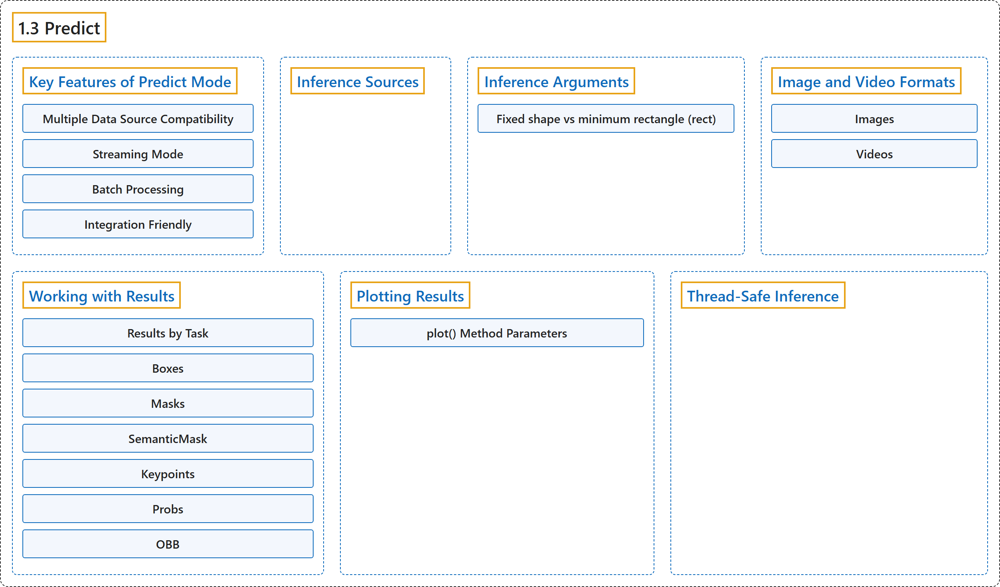

1.3 Predict
Classification

Glossary
| Term | Definition | 中文翻译 | Source |
|---|---|---|---|
| 1.3 Predict 预测 |
(context) "In the world of machine learning and computer vision, the process of making sense of visual data is often called inference or prediction." | （语境）在机器学习和计算机视觉领域，理解视觉数据的过程通常称为推理或预测。 | Ultralytics, n.d., "Model Prediction with Ultralytics YOLO", para. 1 |
| Key Features of Predict Mode 预测模式的主要功能 |
(context) "YOLO26's predict mode is designed to be robust and versatile, featuring:" | （语境）YOLO26 的预测模式设计得稳健而多用途，具有以下功能： | Ultralytics, n.d., "Key Features of Predict Mode", para. 1 |
| Multiple Data Source Compatibility 多数据源兼容 |
"Multiple Data Source Compatibility: Whether your data is in the form of individual images, a collection of images, video files, or real-time video streams, predict mode has you covered." | 多数据源兼容：无论你的数据是单张图像、一组图像、视频文件还是实时视频流，预测模式都能处理。 | Ultralytics, n.d., "Key Features of Predict Mode", item 1 |
| Streaming Mode 流式模式 |
"Streaming Mode: Use the streaming feature to generate a memory-efficient generator of Results objects." |
流式模式：使用流式功能生成一个节省内存的 Results 对象生成器。 |
Ultralytics, n.d., "Key Features of Predict Mode", item 2 |
| Batch Processing 批处理 |
"Batch Processing: Process multiple images or video frames in a single batch, further reducing total inference time." | 批处理：在一个批次中处理多张图像或多帧视频，进一步缩短总推理时间。 | Ultralytics, n.d., "Key Features of Predict Mode", item 3 |
| Integration Friendly 易于集成 |
"Integration Friendly: Easily integrate with existing data pipelines and other software components, thanks to its flexible API." | 易于集成：凭借灵活的 API，能轻松集成到现有数据流水线和其他软件组件中。 | Ultralytics, n.d., "Key Features of Predict Mode", item 4 |
| Inference Sources 推理来源 |
(context) "YOLO26 can process different types of input sources for inference, as shown in the table below." | （语境）YOLO26 能处理不同类型的输入来源来做推理，如下表所示。 | Ultralytics, n.d., "Inference Sources", para. 1 |
| Inference Arguments 推理参数 |
"model.predict() accepts multiple arguments that can be passed at inference time to override defaults:" |
model.predict() 接受多个可在推理时传入、用来覆盖默认值的参数： |
Ultralytics, n.d., "Inference Arguments", para. 1 |
| Fixed shape vs minimum rectangle (rect) 固定形状与最小矩形（rect） |
(context) "By default, predict uses rect=True, which enables minimum-rectangle padding when possible." |
（语境）默认情况下，预测使用 rect=True，在可能时启用最小矩形填充。 |
Ultralytics, n.d., "Fixed shape vs minimum rectangle ( rect )", para. 1 |
| Image and Video Formats 图像与视频格式 |
(context) "YOLO26 supports various image and video formats" | （语境）YOLO26 支持多种图像和视频格式 | Ultralytics, n.d., "Image and Video Formats", para. 1 |
| Images 图像 |
(context) "The below table contains valid Ultralytics image formats." | （语境）下表列出了 Ultralytics 有效的图像格式。 | Ultralytics, n.d., "Images", para. 1 |
| Videos 视频 |
(context) "The below table contains valid Ultralytics video formats." | （语境）下表列出了 Ultralytics 有效的视频格式。 | Ultralytics, n.d., "Videos", para. 1 |
| Working with Results 使用结果 |
(context) "All Ultralytics predict() calls will return a list of Results objects:" |
（语境）所有 Ultralytics predict() 调用都会返回一个 Results 对象列表： |
Ultralytics, n.d., "Working with Results", para. 1 |
| Results by Task 按任务的结果 |
(context) "Each prediction returns one Results object per image or frame." |
（语境）每次预测为每张图像或每一帧返回一个 Results 对象。 |
Ultralytics, n.d., "Results by Task", para. 1 |
| Boxes Boxes（边界框） |
"Boxes object can be used to index, manipulate, and convert bounding boxes to different formats." |
Boxes 对象可用于索引、操作边界框，并把它转换为不同格式。 |
Ultralytics, n.d., "Boxes", para. 1 |
| Masks Masks（掩码） |
"Masks object can be used to index, manipulate and convert masks to segments." |
Masks 对象可用于索引、操作掩码，并把掩码转换为分段。 |
Ultralytics, n.d., "Masks", para. 1 |
| SemanticMask SemanticMask（语义掩码） |
"SemanticMask stores one dense class map for semantic segmentation results." |
SemanticMask 为语义分割结果存储一张稠密的类别图。 |
Ultralytics, n.d., "SemanticMask", para. 1 |
| Keypoints Keypoints（关键点） |
"Keypoints object can be used to index, manipulate and normalize coordinates." |
Keypoints 对象可用于索引、操作并归一化坐标。 |
Ultralytics, n.d., "Keypoints", para. 1 |
| Probs Probs（概率） |
"Probs object can be used to obtain top1 and top5 classification indices and scores." |
Probs 对象可用于获取 top1 和 top5 分类索引及分数。 |
Ultralytics, n.d., "Probs", para. 1 |
| OBB OBB（旋转边界框） |
"OBB object can be used to index, manipulate, and convert oriented bounding boxes to different formats." |
OBB 对象可用于索引、操作旋转边界框，并把它转换为不同格式。 |
Ultralytics, n.d., "OBB", para. 1 |
| Plotting Results 绘制结果 |
"The plot() method in Results objects facilitates visualization of predictions by overlaying detected objects (such as bounding boxes, masks, keypoints, and probabilities) onto the original image." |
Results 对象的 plot() 方法便于把检测到的物体（如边界框、掩码、关键点和概率）叠加到原图上，从而可视化预测。 |
Ultralytics, n.d., "Plotting Results", para. 1 |
| plot() Method Parameters plot() 方法参数 |
(context) "The plot() method supports various arguments to customize the output:" |
（语境）plot() 方法支持各种用来定制输出的参数： |
Ultralytics, n.d., "plot() Method Parameters", para. 1 |
| Thread-Safe Inference 线程安全推理 |
"Thread-safe inference guarantees that each thread's predictions are isolated and do not interfere with one another, avoiding race conditions and ensuring consistent and reliable outputs." | 线程安全推理保证每个线程的预测彼此隔离、互不干扰，避免竞态条件，确保输出一致可靠。 | Ultralytics, n.d., "Thread-Safe Inference", para. 1 |
References
Ultralytics. (n.d.). Model Prediction with Ultralytics YOLO. Ultralytics YOLO Docs (ultralytics 8.4.194). Retrieved October 31, 2026, from https://docs.ultralytics.com/modes/predict/